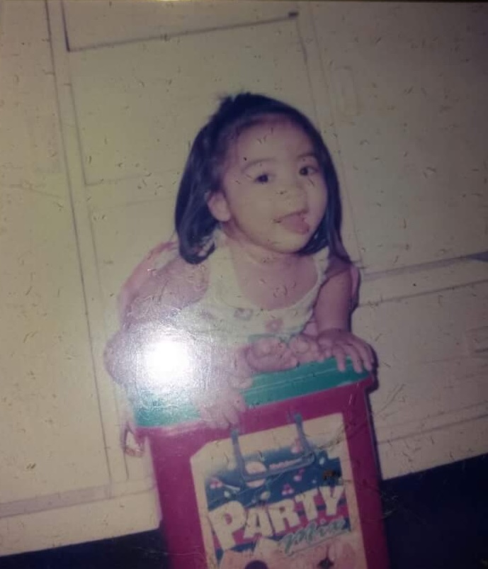
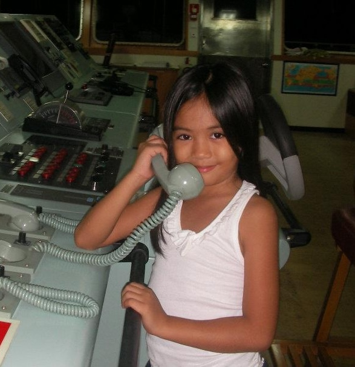
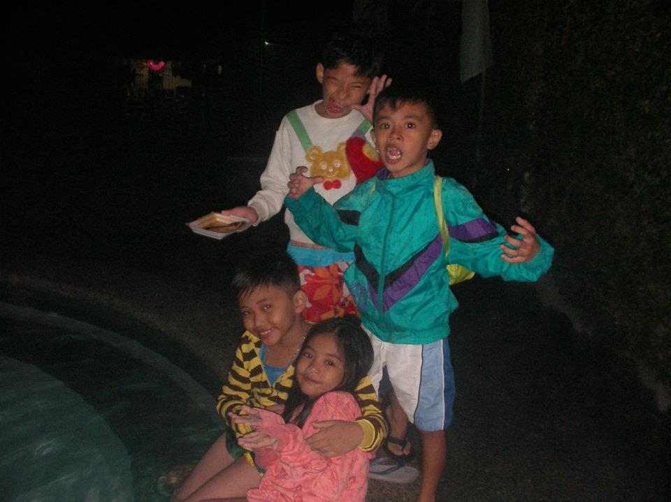
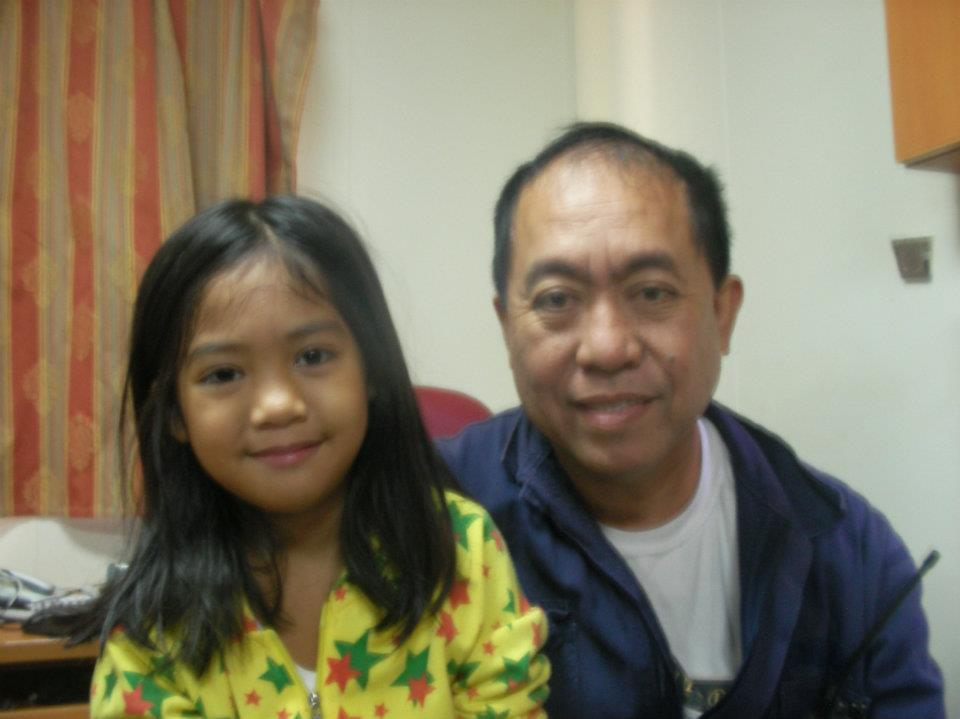
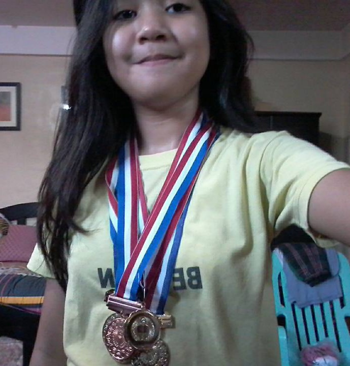
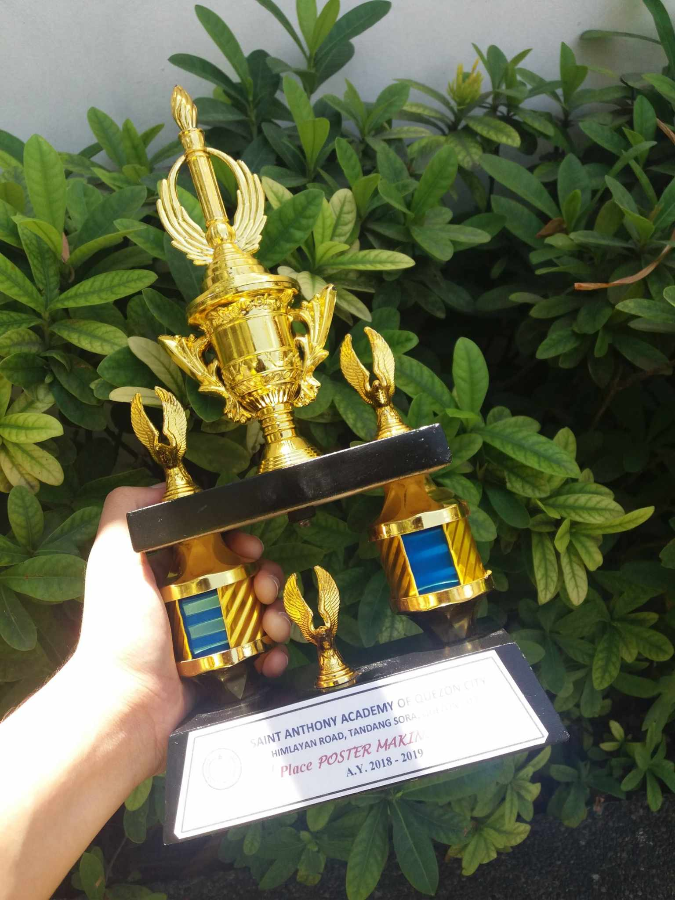
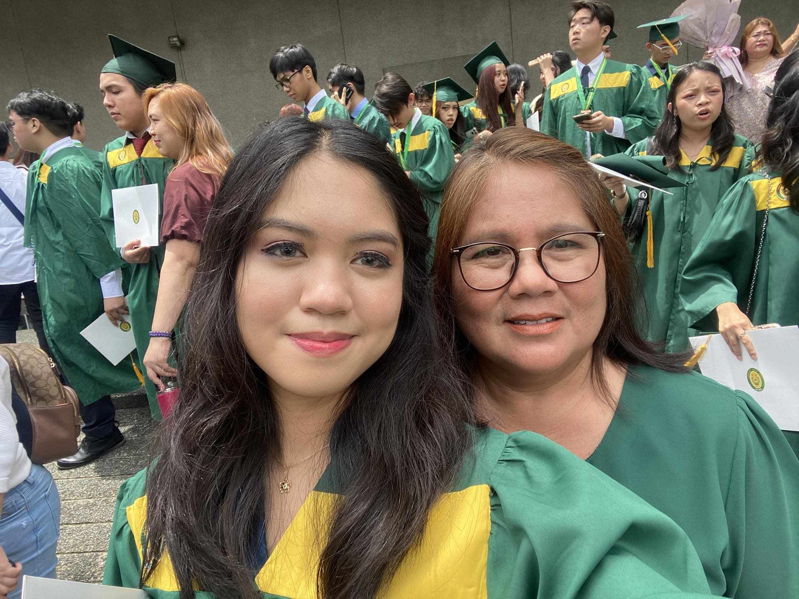
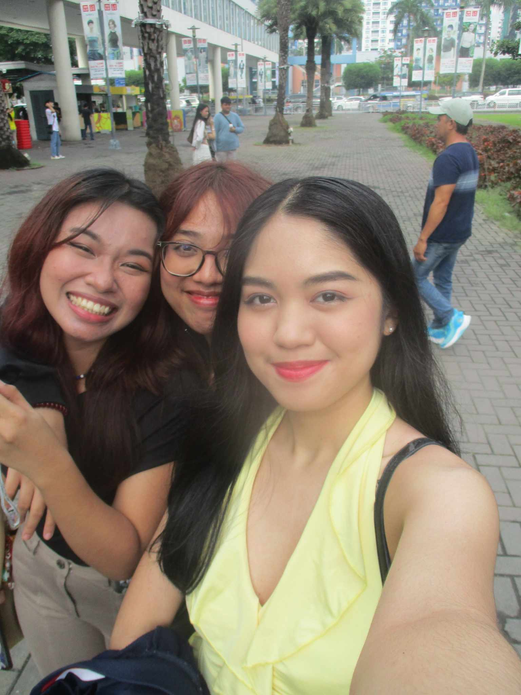
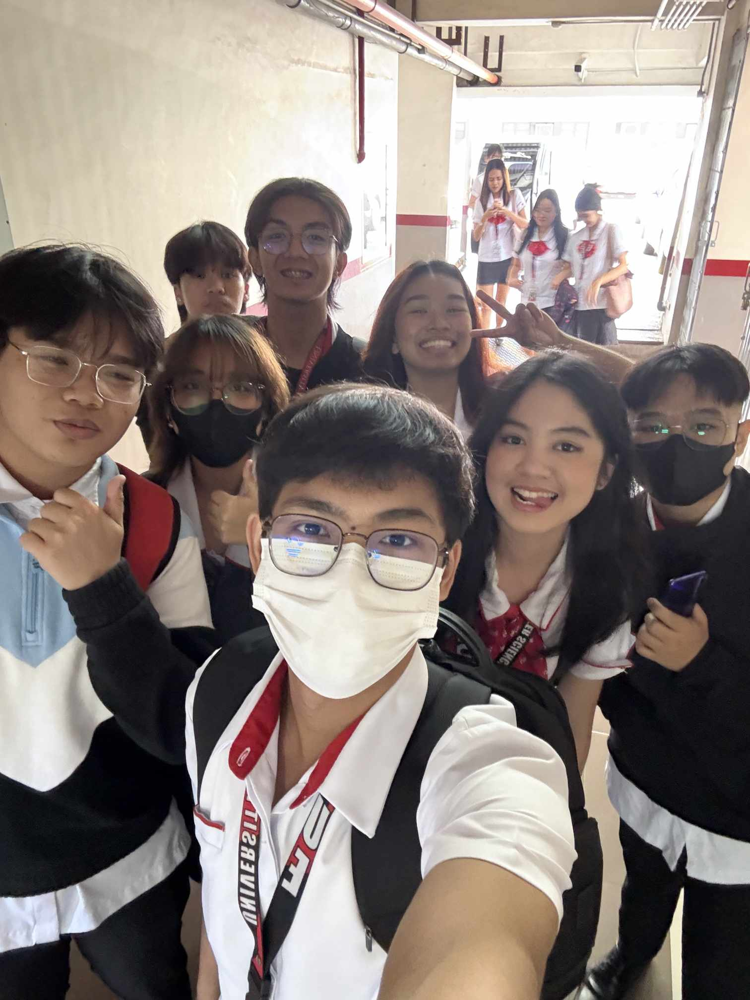

Childhood Years
My Childhood Years🧸ྀི⋆⭒˚.⋆
I am Yasmin T. Casing.1 I was born and raised in Quezon City, Metro Manila, Philippines, and I am 20 years old now.2 My childhood was full of fun and happy moments.3 I was just a normal kid who loved playing outside with my friends.4 We ran, played different traditional games, and laughed a lot.5 Sometimes, we got small cuts or bruises from playing, but we didn't mind.6 I also liked playing with LEGOs.7 I built different lego characters, cars, and one of my favorite lego sets was called Ninjago.8 It made me feel happy and creative.9 My friends and I never got bored.10 I also liked watching cartoons and eating snacks.11 My family took care of me and made me feel safe.12 I remember birthday parties with balloons and cake.13 School was also part of my childhood.14 Growing up, I didn't like math, but I loved science and learning about how planets were made.15 I also didn't like homework, but I always tried my best.16 Back then, I didn't know much about technology until my friends invited me to play PlayStation games with them, and I had so much fun.17 Another fun memory was when my father, who worked abroad, brought me a Sony PSP 3000, a handheld gaming console, when he came back home.18 I downloaded different games on it, and it became one of my best memories.19 My parents' hometown is in Guindulman, Bohol.20 Every year, we visit our house there.21 We go home to see our grandparents and enjoy the place.22 The beaches and views are very beautiful and clean.23 The locals are also very friendly and approachable.24 That's why I made friends there when my parents first brought me to our province.25 The fresh air always made me feel calm and happy.26 Bohol is a big part of my childhood.27 The friends I made there and I played together.28 We ran in the fields and had fun.29 We wandered around the fishponds and they guided me around our small barangay.30 They made me feel welcome as their friend.31 Remembering those moments back then feels like a warm hug to me as a child.32 The smell of the trees and the ocean always made me happy.33 It feels like my second home.34 I miss those days, and I will always remember them.35 My childhood was simple, fun, and full of love, and I will always keep those memories in my heart.36




Back to Top
Teenage Years
My Teenage Years🌸˚˖𓍢ִ໋🌷͙֒✧🩷˚⋆
My teenage years were a time of change and learning new things.1 I began to understand who I am and what I like.2 I started making more decisions on my own and faced new challenges.3 There were happy moments and some difficult ones, but all of them helped me grow.4 My teenage years taught me many lessons about friendships, responsibility, and finding my way.5 One big change was entering high school.6 It was a new chapter in my life with new teachers, subjects, and activities.7 I felt nervous at first, but over time, I got used to everything.8 In junior high school, I was able to keep my old friends from elementary school, but I also got a chance to learn more about my future.9 I was excited but also worried about meeting new people.10 I joined the choir and sports clubs, like volleyball training, for a short period of time.11 I also had the chance to play badminton, where I competed against people from my section and other sections, and I won a 3rd place medal.12 It was a fun way to meet new people and get involved in school activities.13 I learned that high school wasn't only about getting good grades, but also about growing as a person.14 I struggled with some subjects like math, but I worked hard and started to do better.15 I also began learning more about things I enjoy, like science and technology.16 Some days were hard, and I felt stressed, but I learned how to manage my time better.17 I became more curious about different topics and wanted to know more.18 My friends were very important to me in high school.19 We laughed, studied, and made many good memories together.20 I also learned how to balance my schoolwork with fun.21 High school was a time for me to figure out what I'm good at and what I want to do in the future.22 It gave me many experiences that shaped who I am now.23 After junior high school, I went into senior high school and chose the STEM strand.24 This is also when I transferred to a university in Manila, which gave me new opportunities to learn and grow.25 During my senior high school years, I realized that I have a strong passion for technology and that it aligns well with my skills.26 My parents were very supportive and glad for me in taking this program.27 I am very thankful for everything I learned during this time, which helped me decide what I want to do in the future.28 When I graduated from senior high, I felt prepared for the next step.29 High school offered me many things and helped me decide what I wanted to pursue in the future.30 Despite personal struggles and academic obstacles, I gained confidence in myself and my decisions.31 I'm looking forward to what the future holds and the new experiences college will offer me.32




College Years
My College Years‧₊˚👩🏻💻 ☁️⋅♡🪐༘⋆
Lastly, now that I am in college, studying at the University of The East in Manila, and pursuing my college education in Bachelor of Science in Information Technology, I have learned a lot.1 I've gained new skills in coding using different programming languages.2 I've developed systems, designed databases, and learned how technologies revolve around our world.3 Each subject I take has opened my mind to new possibilities, and I've been able to apply what I learn in practical ways.4 Programming, networking, and software development are just some of the areas that have piqued my interest.5 In college, I've gained a deeper understanding of how technology shapes every part of our lives.6 I've even worked on some projects where I developed simple programs and systems that made me feel accomplished.7 This knowledge has made me more confident about my future career in IT.8 College has not only taught me technical skills but also life lessons about time management, teamwork, and problem-solving.9 College life also provided opportunities to meet new friends who were equally passionate about technology and academic excellence.10 Surrounding myself with like-minded individuals motivated me and helped me to empower myself during my education, which led me to grow and upskill my knowledge a lot.11 These friends have become an important part of my life, and we support each other through the ups and downs of academic life.12 We often collaborate on projects and study together, and their presence has made my college experience fulfilling.13 I always look up to my professors as well, who inspire me with their wide knowledge and dedication to teaching.14 Their encouragement pushes me to aim higher and pursue my goals with more confidence while also gaining deeper knowledge that I need for my future profession.15 The challenges I face in college make me stronger, and each day brings me closer to achieving my dreams.16 The experiences and lessons I'm gaining now will serve me well in my future career, And I'm ready to face any challenges and obstacles.17 I am excited for what's ahead.18 It pushes me to do better and aim higher.19 I won't stop and I will keep going no matter what to reach my dreams and make my parents proud, especially my father, who is our breadwinner, and my mother, who always does everything to make our lives easier.20 I want to succeed not only for myself but also for them, to honor their sacrifices and love.21 College life has made me realize the importance of hard work, dedication, and passion for what I do to be able to meet my best self.22 College is not just a phase in my life, it is a foundation that will help me build the future I have always dreamed of.23



Back to Top